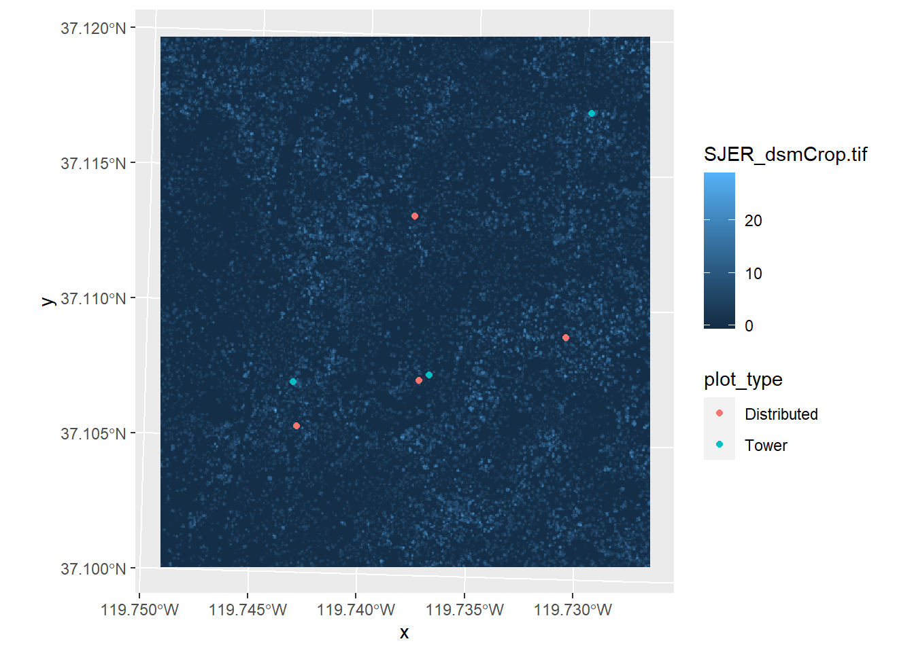
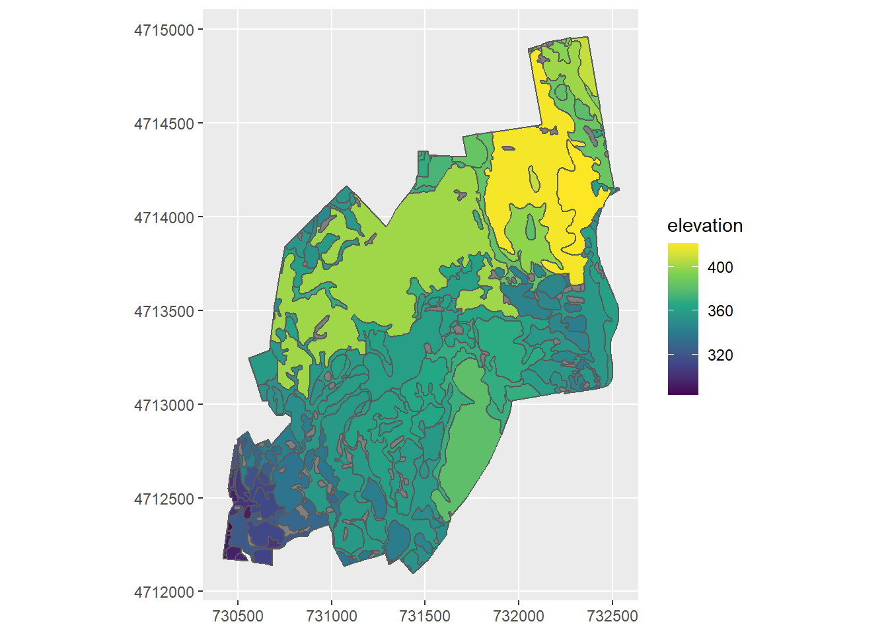

9 Extracting Data from a Raster
A common thing that ecologists and conservation biologists want to get data for their sample sites from different GIS layers and then use these data in different models or statistical tests.
9.1 Sampling data from a raster using points
We use the aggregate function to get data from the canopy raster
plot_canopy_height <- aggregate(SJER_canopy, SJER_plots_utm, mean, as_points = FALSE)
plot_canopy_height$SJER_dsmCrop.tif## [1] 18.913757 23.948151 1.986877 2.183136 28.985016 3.506866 2.201233To link this data into the attribute data we will use the mutate function in the package dplyr. We have a lab in BIOL 1002 that teaches some of the basics of the dplyr package. If you’re not familiar with that package, just use the code below.
library(dplyr)mutate(SJER_plots_utm, canopyHeight = plot_canopy_height$SJER_dsmCrop.tif)## Simple feature collection with 7 features and 3 fields
## geometry type: POINT
## dimension: XY
## bbox: xmin: 256238.5 ymin: 4110088 xmax: 257465.5 ymax: 4111372
## projected CRS: WGS 84 / UTM zone 11N
## plot_id plot_type geometry canopyHeight
## 1 1 Tower POINT (257465.5 4111372) 18.913757
## 2 2 Tower POINT (256238.5 4110270) 23.948151
## 3 3 Tower POINT (256798.3 4110296) 1.986877
## 4 4 Distributed POINT (256737.7 4110949) 2.183136
## 5 5 Distributed POINT (257358.5 4110450) 28.985016
## 6 6 Distributed POINT (256254.5 4110088) 3.506866
## 7 7 Distributed POINT (256754.5 4110274) 2.201233If you examine the SJER_plots_utm data, you will see that it now has the canopy height data in the attribute data. You’ll notice that there is also an attribute for plot_type. We can make a map that symbolizes the sample points by the plot type like this:
ggplot() +
geom_stars(data = SJER_canopy) +
geom_sf(data = SJER_plots_utm, mapping = aes(color = plot_type))
You could now take this data and test whether canopy height is significantly different at the tower sampling points or at the distributed sampling points. We won’t do that just now; we’ll do some statistics on these data in a different module.
9.2 Sampling data from a raster using polygons
At other times, researchers may want to sample data from a raster using a polygon. For example, we might want to know what the maximum elevation within the boundaries of a protected area is.
To do these exercises, we’re going to go back to Harvard forest data set.
We’re going to find out what the maximum elevation is in each of the soil drainage polygons.
First, check that the two layers have the same co-ordinate reference system:
st_crs(HARV_dtm)## Coordinate Reference System:
## User input: WGS 84 / UTM zone 18N
## wkt:
## PROJCRS["WGS 84 / UTM zone 18N",
## BASEGEOGCRS["WGS 84",
## DATUM["World Geodetic System 1984",
## ELLIPSOID["WGS 84",6378137,298.257223563,
## LENGTHUNIT["metre",1]]],
## PRIMEM["Greenwich",0,
## ANGLEUNIT["degree",0.0174532925199433]],
## ID["EPSG",4326]],
## CONVERSION["UTM zone 18N",
## METHOD["Transverse Mercator",
## ID["EPSG",9807]],
## PARAMETER["Latitude of natural origin",0,
## ANGLEUNIT["degree",0.0174532925199433],
## ID["EPSG",8801]],
## PARAMETER["Longitude of natural origin",-75,
## ANGLEUNIT["degree",0.0174532925199433],
## ID["EPSG",8802]],
## PARAMETER["Scale factor at natural origin",0.9996,
## SCALEUNIT["unity",1],
## ID["EPSG",8805]],
## PARAMETER["False easting",500000,
## LENGTHUNIT["metre",1],
## ID["EPSG",8806]],
## PARAMETER["False northing",0,
## LENGTHUNIT["metre",1],
## ID["EPSG",8807]]],
## CS[Cartesian,2],
## AXIS["(E)",east,
## ORDER[1],
## LENGTHUNIT["metre",1]],
## AXIS["(N)",north,
## ORDER[2],
## LENGTHUNIT["metre",1]],
## USAGE[
## SCOPE["unknown"],
## AREA["World - N hemisphere - 78°W to 72°W - by country"],
## BBOX[0,-78,84,-72]],
## ID["EPSG",32618]]st_crs(HARV_soils)## Coordinate Reference System:
## User input: WGS 84 / UTM zone 18N
## wkt:
## PROJCRS["WGS 84 / UTM zone 18N",
## BASEGEOGCRS["WGS 84",
## DATUM["World Geodetic System 1984",
## ELLIPSOID["WGS 84",6378137,298.257223563,
## LENGTHUNIT["metre",1]]],
## PRIMEM["Greenwich",0,
## ANGLEUNIT["degree",0.0174532925199433]],
## ID["EPSG",4326]],
## CONVERSION["UTM zone 18N",
## METHOD["Transverse Mercator",
## ID["EPSG",9807]],
## PARAMETER["Latitude of natural origin",0,
## ANGLEUNIT["Degree",0.0174532925199433],
## ID["EPSG",8801]],
## PARAMETER["Longitude of natural origin",-75,
## ANGLEUNIT["Degree",0.0174532925199433],
## ID["EPSG",8802]],
## PARAMETER["Scale factor at natural origin",0.9996,
## SCALEUNIT["unity",1],
## ID["EPSG",8805]],
## PARAMETER["False easting",500000,
## LENGTHUNIT["metre",1],
## ID["EPSG",8806]],
## PARAMETER["False northing",0,
## LENGTHUNIT["metre",1],
## ID["EPSG",8807]]],
## CS[Cartesian,2],
## AXIS["(E)",east,
## ORDER[1],
## LENGTHUNIT["metre",1]],
## AXIS["(N)",north,
## ORDER[2],
## LENGTHUNIT["metre",1]],
## ID["EPSG",32618]]The ID code at the end of each file is identical (32618), so you can overlay these layers and extract the data. If you are not convinced, try mapping them together.
Then we use the same aggregate function as we did to extract the data from the raster to points. Note, that when you extract with a polygon, there are many pixels within the polygon. You can specify different values you want to extract from the pixels within the polygon, for example, maximum, minimum, mean.
drainage_max_elev <- aggregate(HARV_dtm, HARV_soils, max, as_points = FALSE)
drainage_max_elev$HARv_dtmFull.tif## NULLHere we’ll use the mutate function and create a new shapefile
elevation_by_drainage <- mutate(HARV_soils, elevation = drainage_max_elev$HARV_dtmFull.tif)Now we can plot the soil drainage basins and colour code them by their maximum height.
ggplot() +
geom_sf(data = elevation_by_drainage, mapping = aes(fill = elevation)) +
scale_fill_viridis_c()If you want to change the map display so the coordinates on the map boundary are in UTM, you can do it like so:
ggplot() +
geom_sf(data = elevation_by_drainage, mapping = aes(fill = elevation)) +
coord_sf(datum = st_crs(HARV_dtm)) +
scale_fill_viridis_c()
What if you have sampled points in the field with a handheld gps and only have a csv file with x and y coordinates? How can you get the data? Go to chapter 10 to find out!